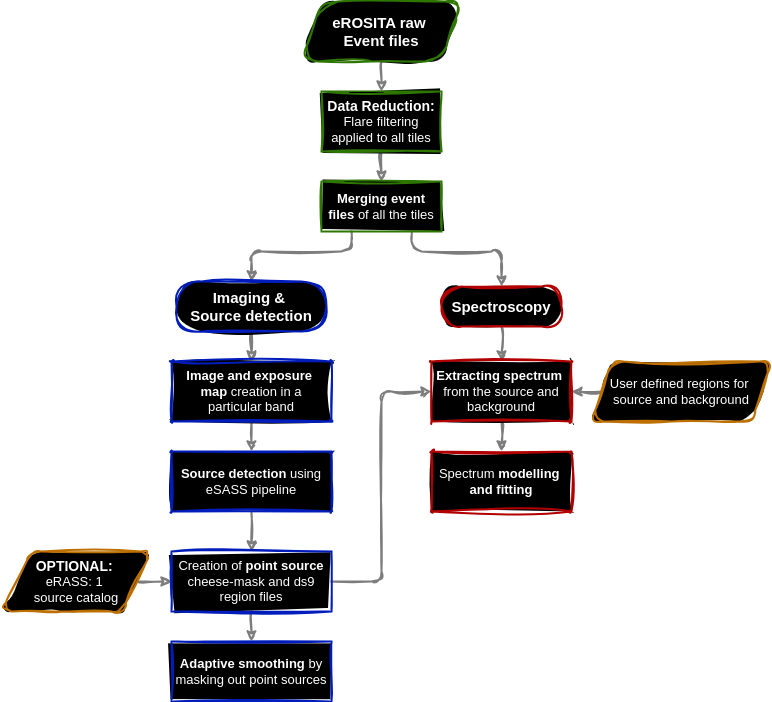

Tutorials for eROSITA data reduction using the eSASS software.#
The tutorials and scripts are available on GitHub at AdiPandya/HEA_SNR_Tutorials
To run the tutorials, you will need to have the eSASS software installed and configured. Please refer to the eSASS installation guide for instructions.
To visualise the spectra and interactively see the effects of parameters on models, check out XiP on the GitHub page AdiPandya/XiP
Here is a brief overview of the eROSITA data reduction steps using the eSASS software.

The tutorials are structured as follows:
1. Data Preparation — Setup.py#
This script is the main data reduction script. It takes raw eROSITA event files across multiple sky tiles and produces flare-filtered, merged event lists ready for imaging and spectral analysis. Tiles are processed in parallel using multiprocess.
Functions#
Clean Event Lists — Runs
evtoolon every raw event file to apply standard flag and pattern filters.Lightcurve Extraction — Runs
flaregtion each cleaned event list to extract a hard-band (>5 keV) count-rate lightcurve.Flare Threshold Calculation — Fits a Gaussian to the lightcurve rate distribution; iterative 3-sigma clipping is applied and the upper 3-sigma limit of the clipped fit is taken as the flare threshold.
Re-run
flaregti— Re-runsflaregtiwith per-tile thresholds to produce final Good Time Intervals (GTIs).Flare-filtered Event Lists — Runs
evtoolwith the new GTIs to produce the final filtered event lists. Optionally re-extracts lightcurves for visual verification (--ff_proof).Merging Tiles — Merges all filtered event lists into a single event list using
evtool. Optionally splits by Telescope Module (--separate_tm).
All output is logged to filtering.log and per-step log files.
Usage#
python Setup.py <input_dir> <output_dir> <timebin> <center_ra> <center_dec> [--ff_plots] [--ff_proof] [--separate_tm]
Argument |
Description |
|---|---|
|
Directory containing raw data tiles |
|
Directory where filtered files and logs are saved |
|
Time bin size (seconds) for lightcurve extraction |
|
Field centre RA in degrees |
|
Field centre Dec in degrees |
|
Save flare filtering diagnostic plots (default: on) |
|
Re-extract lightcurves after filtering for visual verification |
|
Also split the merged event list by TM |
Example#
python Setup.py Data/Raw_data Data/Filtered_Data/ 20 258.11 -39.68 --ff_plot --ff_proof --separate_tm
An interactive walkthrough of the same steps is available in 01_Introduction_and_Setup.ipynb.
1.1. Plotting the input tiles - plot_tiles.py#
This script produces a sky map of the input tiles to visualise the coverage of the observation.
2. Image Creation — Imaging/Imaging.py#
This script takes a merged event file and produces count images, exposure maps, and exposure-corrected images for a given energy band or in RGB.
Functions#
Image creation — Bins the event file into a sky image using
evtool. In RGB mode all three bands are processed concurrently.Exposure map — Runs
expmapon the image to produce a vignetting-corrected exposure map.Exposure correction — Divides the counts image by the exposure map to produce a exposure corrected image.
Usage#
python Imaging.py <event_file> <output_dir> <band_min> <band_max>
python Imaging.py <event_file> <output_dir> --rgb [--rgb_bands R_MIN R_MAX G_MIN G_MAX B_MIN B_MAX]
Argument |
Description |
|---|---|
|
Input (merged) event file |
|
Directory for output images and log |
|
Energy band in eV (required unless |
|
Create a three-band RGB image |
|
Custom RGB band edges in eV (default: 200–700, 700–1100, 1100–2300) |
|
Open the result in DS9 after completion |
Example#
python Imaging.py merged_events.fits Images/ 200 2300
python Imaging.py merged_events.fits Images/ --rgb --rgb_bands 200 700 700 1100 1100 2300
See Imaging/021_Imaging_tutorial.ipynb for an interactive tutorial.
3. Source Detection & Point-Source Masking — Imaging/source_detection.py#
This script runs the full eSASS source detection chain on a count image and produces a point-source catalogue and a cheese mask.
Functions#
Detection mask — Runs
ermaskon the exposure map to create a binary detection mask.Local source detection — Runs
erboxin sliding-box mode to produce an initial source list.Background map — Runs
erbackmapwith the local source list to estimate the background.Map-mode source detection — Re-runs
erboxusing the background map for a refined source list.Maximum-likelihood fitting — Runs
ermldetto derive source parameters and a model source image.Catalogue preparation — Runs
catprepto produce a standard source catalogue.Cheese mask — Constructs a circular exclusion mask around each source at the requested angular radius.
A pre-existing catalogue can be supplied via --pts_catalog to skip detection and go directly to mask creation.
Usage#
python source_detection.py <input_image> <input_expmap> <output_dir> <PS_size> [--pts_catalog <catalog>] [--ds9]
Argument |
Description |
|---|---|
|
Input count image (FITS) |
|
Corresponding exposure map (FITS) |
|
Directory for all outputs |
|
Exclusion radius around each point source in arcmin |
|
Use an existing source catalogue instead of running detection |
|
Open the cheese mask and region file in DS9 |
See Imaging/022_PTS_removal.ipynb for an interactive tutorial.
3.1. Cheese-Mask Editing — Imaging/masking.py#
Allows manual refinement of a cheese mask by reading a DS9 region file and masking the specified circular regions.
4. Adaptive Smoothing — Imaging/adaptive_smoothing.py#
Smooths a count image to a target signal-to-noise ratio using either XMM-SAS asmooth or eSASS erbackmap.
Functions#
Mask application — Applies the cheese mask to the image and exposure map to exclude point sources.
Adaptive smoothing — Runs the chosen tool (
xmm-sas/eSASS) to smooth the masked image to the desired SNR.Output — Saves the smoothed FITS image and a log file.
Usage#
python adaptive_smoothing.py <input_image> <input_expmap> <desired_snr> <cheesemask_file> <asmooth_tool> \
[--boxlist_file <file>] [--detmask_file <file>] [--emin <eV>] [--emax <eV>] [--ds9]
Argument |
Description |
|---|---|
|
Path to the input image file |
|
Path to the input exposure file. |
|
Desired signal-to-noise ratio for asmooth |
|
Path to the cheese-mask file. |
|
|
|
Required for eSASS mode |
|
Required for eSASS mode |
|
Energy range in eV, required for eSASS mode |
The adaptive smoothing workflow is also demonstrated in Imaging/022_PTS_removal.ipynb.
5. Spectral Analysis — Spectra/spectra_extraction.py#
Extracts source and background spectra from a merged eROSITA event file using user-defined DS9 region files.
Functions#
Mask creation — Converts DS9 region files into FITS masks combined with the cheese and detection masks.
Source spectrum extraction — Runs
srctoolon the source region to extract the spectrum, ARF, and RMF.Background spectrum extraction — Runs
srctoolon the background region to extract the corresponding response files.Spectral corrections — Applies effective area corrections to both spectra.
Spectral grouping — Groups the source spectrum to a minimum SNR using
grouppha.
Usage#
python spectra_extraction.py <input_events> <src_region> <bkg_region> <cheesemask_file> <detmask_file>
Argument |
Description |
|---|---|
|
Input merged event file |
|
DS9 region file for the source region (pixel coordinates) |
|
DS9 region file for the background region (pixel coordinates) |
|
Path to the cheese-mask FITS file |
|
Path to the detection mask FITS file |
Example#
python spectra_extraction.py Data/Filtered_Data/Merged/merged_events.fits \
Spectra/src.reg Spectra/bkg.reg \
Data/Source_Cat/cheesemask_PS_1.5arcmin.fits \
Data/Source_Cat/detmask.fits
An interactive walkthrough is available in Spectra/03_Extract_Spectra.ipynb.
5.1. Spectral Fitting Notebooks#
bkg_spectra_analysis.ipynb — Demonstrates background spectral modelling and subtraction. This model can then be used in the source spectral fitting.
source_spectra_analysis.ipynb — Demonstrates spectral fitting of the extracted source spectra using PyXSPEC.